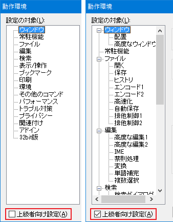

秀丸エディタＱ＆Ａ集は、以下の表記に基づいて記述されています。 ただし、すべての原稿の表記を規制するわけではなく、表記上のガイドラインとして、 表記に関する緩やかな例を示すものです。
キーボードにあるキーは［ ］でくくって表記します。
| キー表記 | 操作内容 |
|---|---|
| [A],[1] | [A]キーや[1]キーを押す。 |
| [Space] | スペースバーを押す |
| [Shift] | シフトキーを押す |
| [Ctrl] | コントロールキーを押す |
| [Tab] | タブキーを押す |
| [BS] | バックスペースキー([BackSpace])を押す |
| [Esc] | エスケープキーを押す。 |
| [F1] | ファンクション１キーを押す。 |
| [Alt] | オルトキーを押す。 |
| [Enter] | リターンキーを押す。 |
| [Ins] | インサートキー([Insert])を押す |
| [Del] | デリートキー([Delete])を押す。 |
| [Home] | ホームキーを押す。 |
| [End] | エンドキーを押す。 |
| [PgUp] | ページアップキー([PageUp])を押す |
| [PgDn] | ページダウンキー([PageDown])を押す |
| [↑] | アップキーを押す。 |
| [↓] | ダウンキーを押す。 |
| [←] | レフトキーを押す。 |
| [→] | ライトキーを押す。 |
※なにぶん会議室への寄稿をベースにした共同作業ですので、表記の統一が乱れている部分も残っていますが、 ほぼ常識内でのブレだろうと甘えちゃったりして……。ま、長い目で大目に見てやってください。 版を重ねるごとに手がいれられると思いますm(__)m お気づきの点は、いつでもご指摘くださいm(_._)m
「動作環境」は、ダイアログにある「上級者向け設定」をチェックしないと 表示されない項目もあります。
秀丸エディタＱ＆Ａ集では、「上級者向け設定」にチェックが入っている前提で説明を行うので、 説明と一致しない場合は、「上級者向け設定」のチェックを確認してください。

また、執筆時の最新版の画面を使用するため、バージョンが一致しない場合は、多少異なる場合もあります。